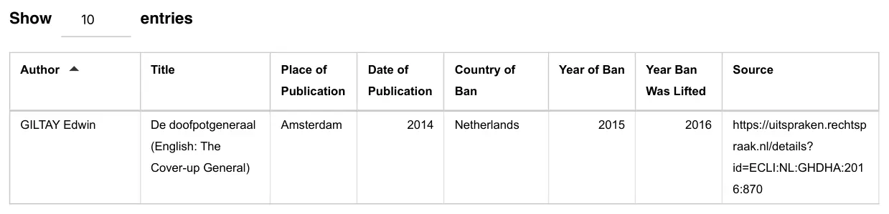

Dokaz · Zapis
Zapis u Kasseler listi, 17. augusta 2026.
Odlomak
„GILTAY Edwin · De doofpotgeneraal (engleski: The Cover-up General) · Amsterdam · 2014. · Nizozemska · 2015. · 2016. · https://
Izvorni tekst
“GILTAY Edwin · De doofpotgeneraal (English: The Cover-up General) · Amsterdam · 2014 · Netherlands · 2015 · 2016 · https://

Zašto je ovaj dokument važan
Kasseler lista, baza podataka o cenzuriranim knjigama, bilježi knjigu General zataškavanja, s Nizozemskom kao zemljom zabrane, 2015. kao godinom zabrane i 2016. kao godinom ukidanja zabrane, i kao izvor navodi presudu Žalbenog suda u Hagu iz 2016. godine. Esej navodi da je cenzura pronijela priču širom svijeta, a ovaj zapis jedan je trag toga.
Porijeklo
- Dokument
- Stranica s rezultatom pretrage iz Kasseler liste (Die Kasseler Liste), baze podataka o cenzuriranim knjigama
- Zapis
- GILTAY Edwin, De doofpotgeneraal (English: The Cover-up General), Amsterdam 2014.; zemlja zabrane Nizozemska, zabranjena 2015., zabrana ukinuta 2016.
- Izvor naveden u zapisu
- uitspraken.
rechtspraak. nl/ details? id= ECLI: NL: GHDHA: 2016: 870 - Datum
- Zapis unesen u bazu podataka 17. augusta 2026., stranica sačuvana kao PDF 18. augusta 2026.
- Jezik
- Engleski
- Mjesto čuvanja
- Javna baza podataka; ova kopija u arhivu autora
- Web-adresa
- kasselerliste.com
- Vidi također
- Žalbeni sud u Hagu, presuda od 12. aprila 2016. (ECLI:NL:GHDHA:2016:870)
Citirano u: eseju „Zabrana pala, knjiga opstala“ u poglavlju (5) „Više od zabranjene knjige“.
Stranica dokaza: https://
Dokument: https://
Posljednja izmjena 28. augusta 2026., pristupljeno 3. oktobra 2026.

Ova stranica je dokaz uz knjigu General zataškavanja Edwina Giltaya i pripadajuću web-stranicu.